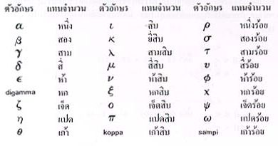
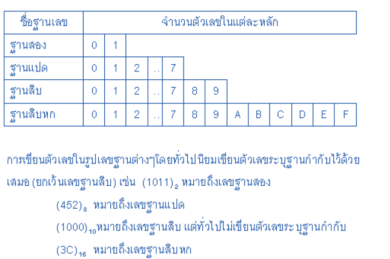
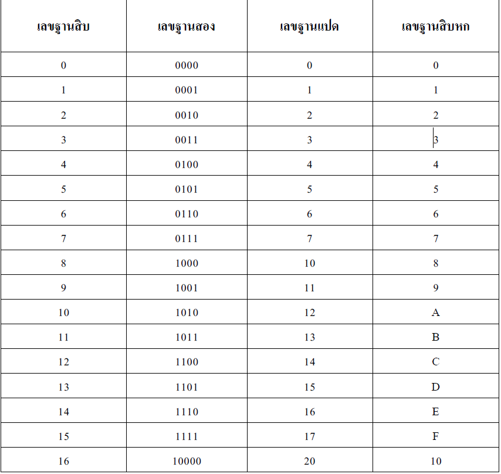
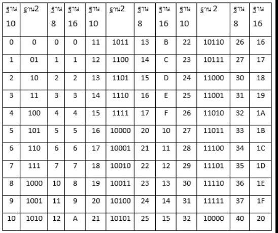
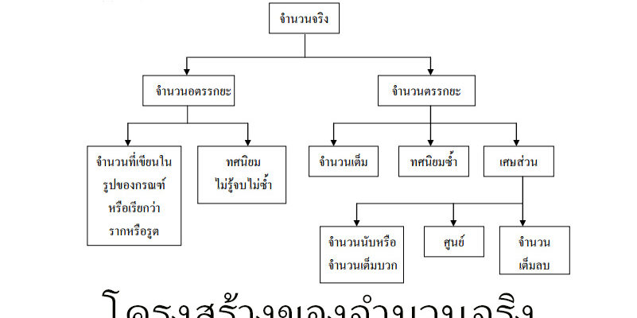

2.1 วิวัฒนาการของระบบจำนวนและตัวเลข
มนุษย์เริ่มต้นการนับจากการใช้รอยขีดบนผนังถ้ำ ก้อนหิน และนิ้วมือ เพื่อบันทึกจำนวนสิ่งของหรือวันเวลา ต่อมาเมื่อสังคมพัฒนา อารยธรรมโบราณอย่างสุเมเรียนและบาบิโลเนียนได้สร้างสัญลักษณ์แทนตัวเลข และพัฒนาระบบเลขฐานเพื่อใช้ในการคำนวณ ดาราศาสตร์ และการนับเวลา ระบบเลขฐาน 60 ของบาบิโลเนียนยังคงใช้มาจนถึงปัจจุบันในระบบชั่วโมง นาที และวินาที

2.2 โครงสร้างของระบบจำนวน
ระบบจำนวนคือกลุ่มของตัวเลขที่ใช้แทนปริมาณ โดยแต่ละระบบจะมี "ฐาน" เป็นตัวกำหนดจำนวนเลขโดดที่ใช้ เช่น ฐานสิบมีเลข 0–9 ส่วนฐานสองมีเพียง 0 และ 1 ตัวเลขแต่ละหลักมีค่าประจำหลักแตกต่างกันตามกำลังของฐาน เช่น ในฐานสิบ หลักหน่วย หลักสิบ และหลักร้อย
โครงสร้างนี้ทำให้มนุษย์สามารถเขียนจำนวนที่มีค่ามากได้อย่างเป็นระบบ และสามารถนำไปใช้คำนวณหรือแปลงฐานได้อย่างถูกต้อง

2.3 ระบบเลขฐานต่างๆ
ระบบเลขฐานที่ใช้กันทั่วไปมีหลายแบบ ได้แก่
- เลขฐานสอง (Binary) ใช้ตัวเลข 0 และ 1 นิยมใช้ในคอมพิวเตอร์และระบบดิจิทัล
- เลขฐานแปด (Octal) ใช้ตัวเลข 0 ถึง 7
- เลขฐานสิบ (Decimal) ใช้ตัวเลข 0 ถึง 9 เป็นระบบที่ใช้ในชีวิตประจำวัน
- เลขฐานสิบหก (Hexadecimal) ใช้ตัวเลข 0 ถึง 9 และตัวอักษร A ถึง F
ระบบเลขฐานเหล่านี้สามารถแปลงค่าระหว่างกันได้ โดยอาศัยหลักการค่าประจำหลักและการหารซ้ำ

2.4 การเปลี่ยนฐานในระบบตัวเลข
การเปลี่ยนฐานเป็นกระบวนการแปลงตัวเลขจากฐานหนึ่งไปยังอีกฐานหนึ่ง เช่น การแปลงจากฐานสิบเป็นฐานสอง หรือจากฐานสิบเป็นฐานห้า วิธีที่นิยมใช้คือการหารซ้ำด้วยค่าฐาน และนำเศษมาเรียงย้อนกลับ วิธีนี้ช่วยให้เข้าใจโครงสร้างของจำนวนในแต่ละฐานได้ชัดเจนยิ่งขึ้น
ตัวอย่างจากเอกสารแสดงการแปลงจำนวน 748 ในฐานสิบให้เป็นเลขฐานห้า โดยใช้แนวคิดการมัดดินสอเป็นกลุ่มตามค่าฐาน

2.5 จำนวนจริง
จำนวนจริงคือกลุ่มของจำนวนทั้งหมดที่สามารถเขียนแทนตำแหน่งบนเส้นจำนวนได้ ประกอบด้วย
- จำนวนธรรมชาติ เช่น 1, 2, 3, ...
- จำนวนเต็ม เช่น ..., -2, -1, 0, 1, 2, ...
- จำนวนตรรกยะ เช่น 1/2, -3/4
- จำนวนอตรรกยะ เช่น π (พาย), √2
จำนวนจริงเป็นพื้นฐานสำคัญของคณิตศาสตร์ ใช้ในการคำนวณ วัดปริมาณ และอธิบายปรากฏการณ์ทางวิทยาศาสตร์
